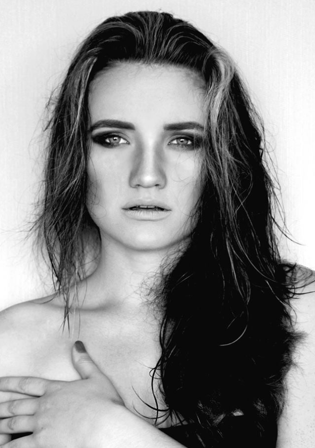

About Me

Ukraine born, Nigeria raised, UK educated, and currently living in New York City, I am person of many passions.
I tell stories - in photographs, in movies, or in writing.
“Uncovered” is a place where my imagination comes alive and is shared with you.
Each section uncoveres a different tale:
- Look in Stills for my photography
- Look in Chapters for my videos
- Look in Pieces for my published writing